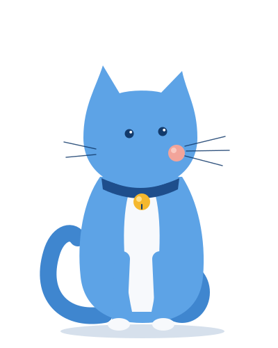
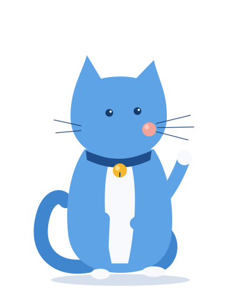

¡Listo! Tu correo está confirmado
Regresa a Milo en tu tablet y toca “Ya confirmé, entrar”.
Ya puedes cerrar esta página.

Crea tu contraseña nueva
Un momento, te llevamos a la página para crearla.
Si no pasa nada, abre otra vez el enlace del correo.
Este enlace ya no sirve
Los enlaces de confirmación vencen y solo se pueden usar una vez. Si ya entraste a Milo, no tienes que hacer nada.
Si todavía no puedes entrar, en la app toca “Crear cuenta de dueño” con el mismo correo y te mandaremos un enlace nuevo.
No pudimos confirmar tu correo
Vuelve a abrir el enlace del correo en unos minutos.
Si sigue sin funcionar, en la app toca “Crear cuenta de dueño” con el mismo correo para recibir un enlace nuevo.

¡Hola! Soy Milo
Te ayudo a vender en tu tiendita.
Milo se usa desde la app en tu tablet.